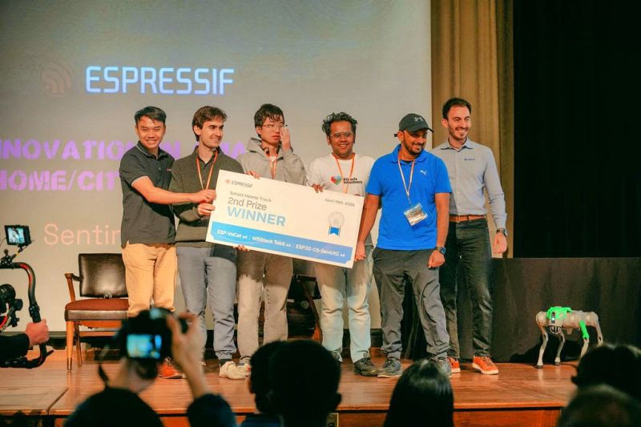
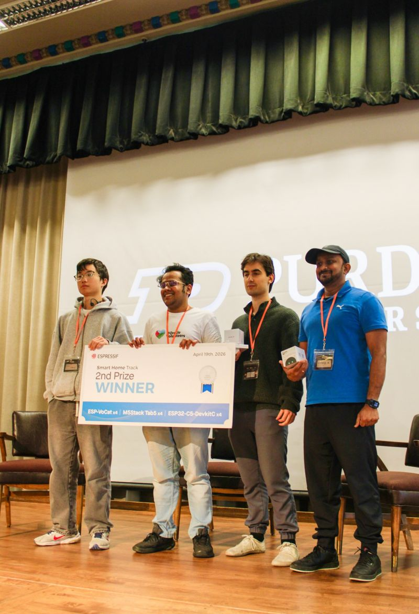
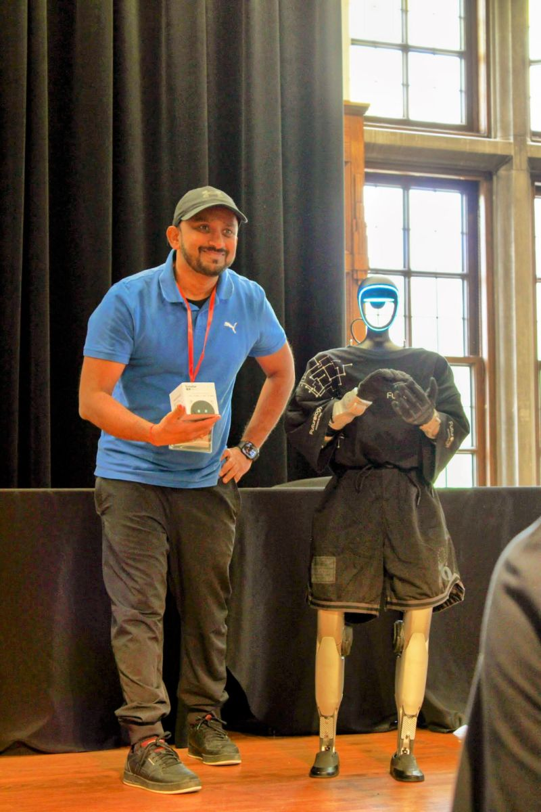
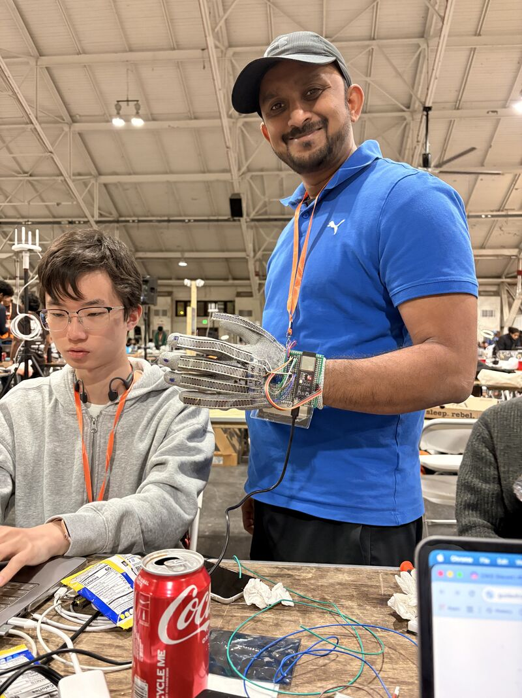
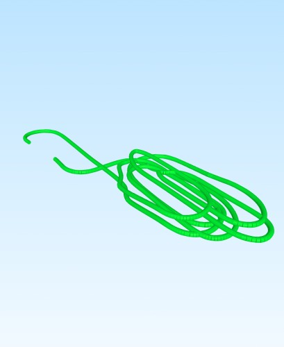
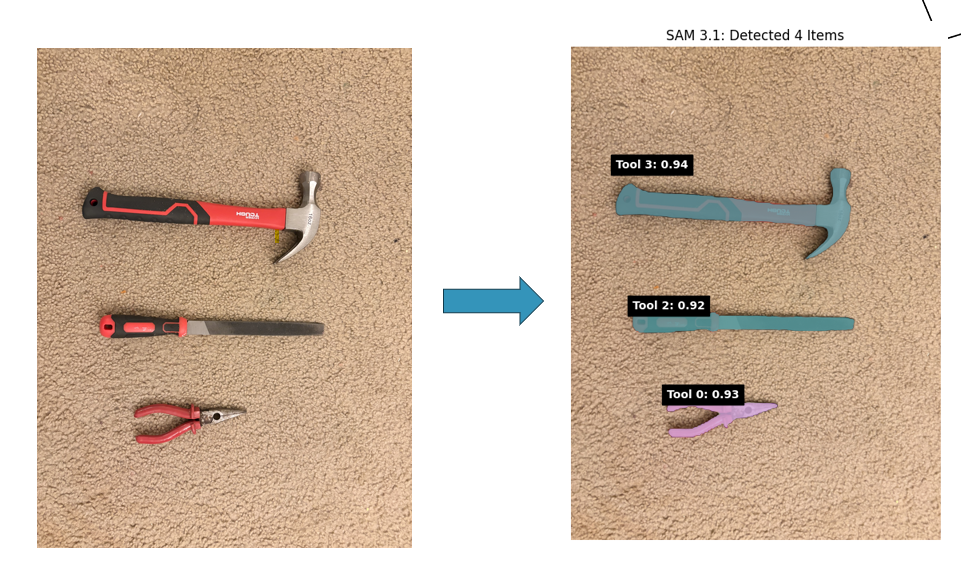
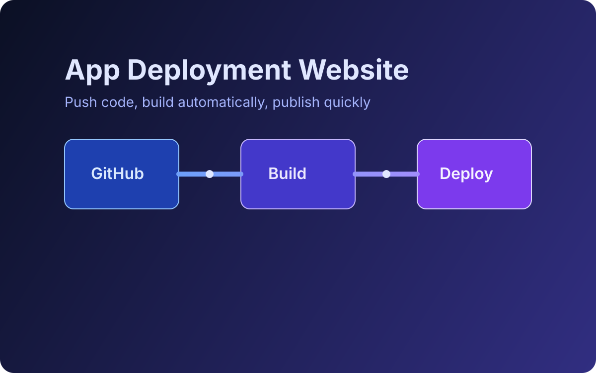
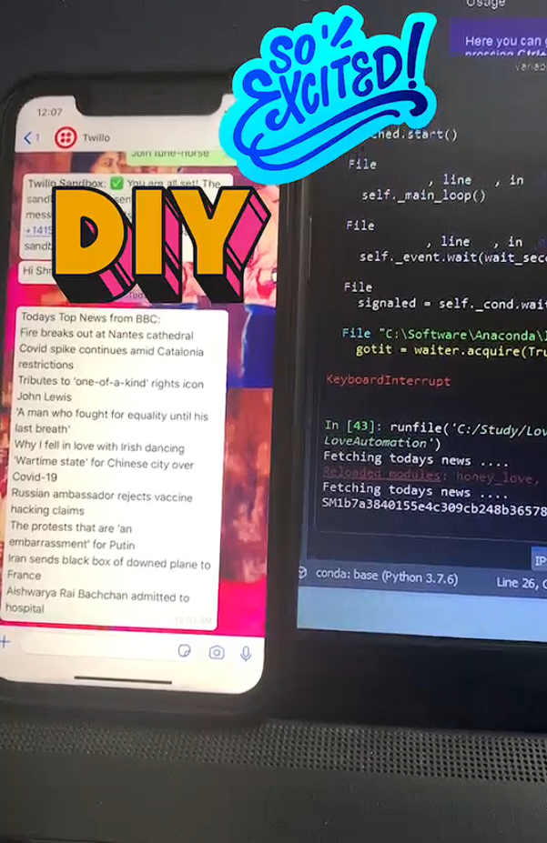

Automotive Controls & Embedded Software
MATLAB, Simulink, Embedded Coder, AUTOSAR, CAN, C, TargetLink, ISO 26262, ASIL, MIL/SIL, and model-based development.

I am an automotive software professional with extensive experience in control systems, embedded software, simulation, validation, code generation, and engineering automation.
I have led vehicle-data-driven simulation platforms, automated software-evaluation workflows, continuous-integration systems, and enterprise engineering tools for production automotive software.
My current work and graduate studies extend this foundation into artificial intelligence, robotics, computer vision, visual SLAM, edge AI, and autonomous-system evaluation.
Project: SentinelGlove (Instinctive Edge AI)
Tech Stack: Rust, ESP32-S3, 1D-CNN, PyTorch, Embedded Systems
I recently competed in the world’s largest hardware hackathon at Purdue University, where my team secured 2nd place for our project, SentinelGlove. Leveraging my background in embedded software and current graduate research in AI/ML, we built a wearable interface designed to keep industrial workers out of hazardous zones through real-time machinery control.
Looking forward to evolving this concept into Version 2.0 using the new Espressif hardware awarded at the event.




MATLAB, Simulink, Embedded Coder, AUTOSAR, CAN, C, TargetLink, ISO 26262, ASIL, MIL/SIL, and model-based development.
Vehicle simulation, diagnostic simulation, regression testing, GitLab CI, Jenkins, Polyspace, static code analysis, and engineering workflows.
Python, Pandas, NumPy, SciPy, Matplotlib, scikit-learn, data cleaning, visualization, scripting, and automation.
OpenCV, YOLO, stereo vision, depth estimation, visual SLAM, ROS 2, Jetson Orin Nano, PyTorch, and edge AI.
Product ownership, cross-functional collaboration, tool strategy, process development, stakeholder communication, mentoring, and engineering-quality improvement.
Git, GitLab, Jenkins, CI/CD, Docker, Linux/Ubuntu, automated testing, reproducible workflows, model integration, and edge deployment.
Public projects demonstrating hands-on work in embedded AI, perception, localization, robotics, and data-driven engineering.
Developed a wearable industrial-safety interface using flex and motion-sensor data, memory-safe embedded firmware, and an on-device neural-network pipeline for gesture-based machinery-control commands.
Focus: Embedded integration, sensor data, edge inference, rapid prototyping, and system architecture.

Investigated visual-inertial localization and mapping for GPS-denied parking environments using ORB-SLAM3, dataset integration, calibration workflows, trajectory export, and experimental analysis.
Focus: Environment setup, sensor configuration, localization workflow, evaluation planning, and parking use-case design.
View Project →
Developed a ROS 2 perception workflow for live YOLO inference on a Jetson-based mobile robot. Integrated camera topics, CvBridge, OpenCV visualization, and edge inference while resolving hardware and software compatibility challenges.
Focus: ROS image pipelines, edge deployment, perception integration, debugging, and model limitations.
View Project →
Developed an experimental industrial-vision workflow that processes multiple camera feeds, segments objects, creates visual embeddings, and clusters object representations to support tool-location queries.
Focus: Multi-camera processing, object representation, unsupervised learning, and operator-facing queries.
View Project →
Created a web-based workflow for deploying Python applications from GitHub repositories.
View Project →
Built a Python automation that retrieves selected news through public APIs and delivers curated updates through WhatsApp using Twilio.
View Project on LinkedIn →Industry Engagement
Invited industry participant representing automotive engineering perspectives in discussions on modeling, simulation, embedded software, verification, code generation, and AI-enabled engineering workflows.
Participant in 2025 and 2026
Technical Presentation
Presented an engineering approach for applying static code analysis to large embedded-software components.
MathWorks Advisory Board
Award
Earned second place for SentinelGlove, an embedded edge-AI industrial-safety concept.
Recently I refreshed my knowledge of Calculus. This article summarises my learning and guide for others who wants to learn the same
Published on: Jul 16,2025
Read Article on Medium →Term paper on factory monitoring concepts and implementation details.
Published on: May 2026
Open PDF Viewer →Research paper on multilevel car parking using user participatory SLAM.
Open PDF Viewer →Automotive Software, Simulation, Evaluation & Engineering Tools
Technical Leadership & Product Ownership
Automotive Controls & Electrification
Embedded Software & Model-Based Development